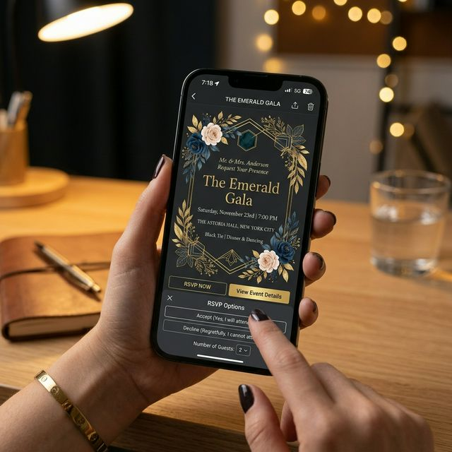

La forma más moderna y elegante de convocar a tus invitados.

Integramos botones de confirmación vía WhatsApp, mapas GPS interactivos, cronogramas del evento y cuenta regresiva. Todo con un diseño que coincide perfectamente con la temática de tu festejo.
Ahorras en impresión, cuidas el planeta y obtienes respuestas en tiempo real. Además, elevas el nivel de tu evento desde el primer contacto con tus invitados.
Para bodas, XV años, graduaciones y eventos corporativos que buscan destacar y facilitar la logística de sus invitados.